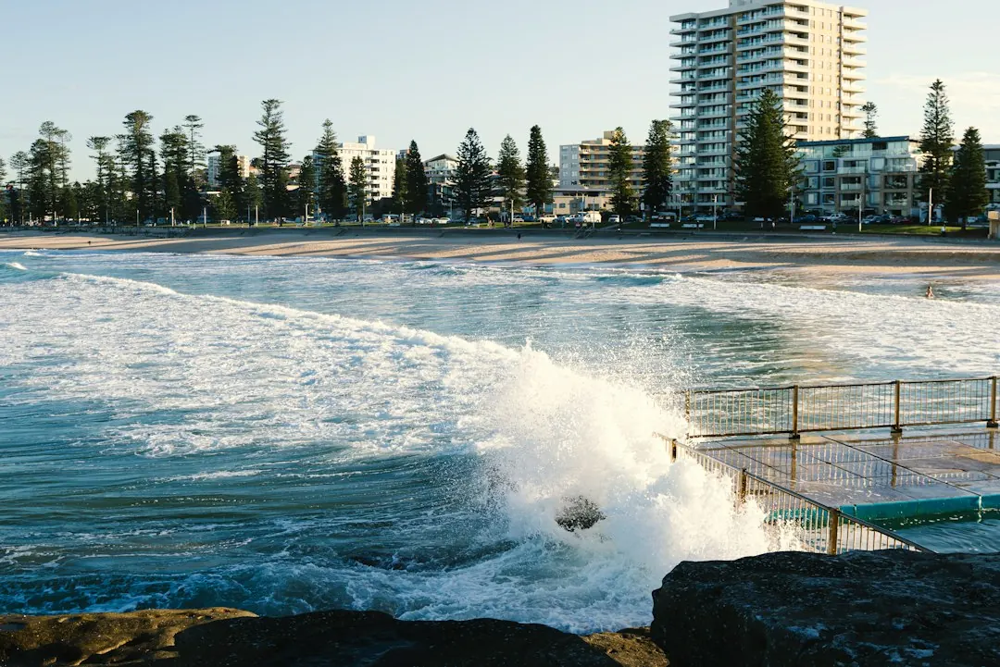

A switchboard repair may involve a safety switch, surge protection, fuse box replacement or complete board replacement. Older Sydney homes built before the 1980s with ceramic fuses may need assessment before adding air conditioning, induction cooking, solar, a battery or an EV charger. Quote scope can change with asbestos or mica backing, consumer mains, meter defects, three phase supply and coordination with Ausgrid or Endeavour Energy.
For homeowners comparing switchboard repairs sydney options, the useful starting point is identifying the board's warning signs, present load and likely future equipment before requesting a quote.
Switchboard Repairs Sydney Explained
Switchboard Upgrades Sydney describes the first step as working out what the existing board can handle. A board with old rewireable ceramic fuses, repeated trips or a crowded layout needs a different discussion from one that only needs a targeted safety switch installation.
Look for fuses that blow often, breakers that trip, scorch marks, buzzing or a burning smell. Record which circuit is affected and what was happening at the time. If the board has a dark backing panel behind the fuses, it may be asbestos or mica. Do not disturb it. Ask for the material and surrounding installation to be assessed.
- Note whether the board has safety switches and spare circuit space.
- Describe any repeated fault rather than treating it as an isolated nuisance.
- Mention planned solar, a battery, an EV charger or a renovation.
Choose between a targeted fix and replacement
Not every repair means replacing the entire board. Safety switch installation, surge protection and fuse box replacement are separate scopes, while a full replacement may involve new breakers, safety switches, testing and a Certificate of Compliance for Electrical Work.
A targeted fix may suit a board that is otherwise appropriate for the home's present load. Replacement deserves closer consideration where an ageing fuse box, limited space or wider defects affect the installation. The electrician should explain what the proposed work resolves and what remains unchanged.
For a separate explanation of the replacement decision, see the guide to switchboard replacement in Sydney. Keep the two scopes distinct when comparing quotes, because a replacement and a repair are not the same job.
A useful scenario is a pre-1980s home with ceramic fuses and a planned EV charger. The immediate request may sound like a charger installation, but the board's age, spare space and supply capacity need to be checked before the charger scope is settled.
What can change the quote
A quote can change once the board is opened. The published service information identifies asbestos backing panels, consumer mains, meter box defects and three phase supply as factors that can alter the work required. These are inspection questions, not assumptions to make from a photograph.
Ask for the proposal to separate the visible repair from additional work discovered during assessment. The following questions help:
- Is the existing board suitable for the requested safety switch or surge protection?
- Do the consumer mains or meter panel need attention?
- Is three phase supply required, or would a larger single phase board address the load?
- Does the quoted scope include testing and the Certificate of Compliance?
- Which items depend on Ausgrid or Endeavour Energy coordination?
This format makes competing quotes easier to compare. It also shows which part relates to the board itself and which part relates to the meter, supply or utility requirements.
Plan for solar, batteries and EV charging
New electrical equipment changes the question from repairing today's fault to preparing for the home's next load. The published guidance names air conditioning, induction cooktops, solar panels, batteries and EV chargers as equipment that older boards may not have been designed to support together.
Before committing to extra equipment, ask whether the board has spare circuit space and enough supply capacity. A solar-ready upgrade may involve a different scope from a fuse replacement, while a three phase assessment may be relevant where the planned installation requires it.
Tell the electrician about equipment that is planned but not yet installed. Include the property type, the present board layout and any known issue in the enquiry. That gives the quote a clearer starting point and reduces the chance that future equipment is omitted from the discussion.
For example, a crowded board with repeated tripping calls for two separate questions: what needs correcting now, and what capacity will be needed if solar, a battery or an EV charger follows? Keeping those questions separate helps identify whether the proposal is a repair, an upgrade or both.
NSW completion and utility questions
The work described for NSW must be completed by someone holding a NSW electrical licence. It must then be tested and certified with a Certificate of Compliance for Electrical Work. The certificate is lodged through the Building Commission NSW eCert portal, and a copy goes to the customer.
Meter and supply work may require coordination with Ausgrid or Endeavour Energy, depending on the suburb. That can affect when power is switched off and how the job is scheduled. Ask which parts of the job depend on utility approval or attendance, and what will be documented after testing.
Before accepting a proposal, check that it identifies the work being performed, any exclusions, the testing and the certificate. Keep the completed documentation with the property's electrical records. If the scope changes after inspection, ask for the change to be explained before the additional work proceeds.
- Inspect without disturbing. Look for ceramic fuses, missing safety switches, scorch marks, buzzing, burning smells or a crowded layout, but do not disturb a dark backing panel.
- Describe the fault. Record which fuse or circuit fails and explain what was happening when the problem appeared.
- List future loads. Mention planned solar, a battery, an EV charger, air conditioning, induction cooking or a renovation before the scope is prepared.
- Compare the scope. Check whether the proposal is for a targeted fix, fuse box replacement, full replacement, meter work or three phase assessment.
- Confirm completion. Ask how testing will be completed and when the Certificate of Compliance for Electrical Work will be provided.
| Situation | Likely discussion | Question to ask |
|---|---|---|
| Repeated blown fuses or trips | Targeted repair or wider board assessment | What is causing the repeated fault? |
| Old ceramic fuse box | Fuse box replacement or full switchboard replacement | Can the existing board support current and planned loads? |
| Planned solar, battery or EV charger | Solar-ready upgrade or supply assessment | Is there spare circuit space and enough supply capacity? |
| Meter or supply defect | Meter box, consumer mains or utility coordination | Which part requires additional scheduling? |
Common questions
When might an older Sydney home need a new switchboard? The published guidance says homes built before the 1980s that still have ceramic fuses are likely to need an upgrade assessment. The same may apply when the home is adding a battery or EV charger.
What signs should be reported? Frequent tripping, blown rewireable fuses, scorch marks, buzzing and a burning smell should be described when requesting an assessment. A dark backing panel should not be disturbed.
Does every repair require full replacement? No. Safety switch installation, surge protection and fuse box replacement are separate scopes from full switchboard replacement. The suitable option depends on the board's condition and required capacity.
Why might utility coordination affect the job? Meter and supply work may need coordination with Ausgrid or Endeavour Energy, depending on the suburb. That can affect the power outage and scheduling.
What should a quote explain? Ask it to identify the present fault, proposed work, exclusions, testing, certification and any consumer mains, meter or three phase issues that could change the scope.
This guide covers warning signs, repair choices, quote factors, future electrical loads and NSW completion questions for residential switchboard work in Sydney.